A Ordem Demolay é o segundo maior grupo de jovens existente no mundo, superado apenas pelos escoteiros; A Ordem Demolay é uma ordem iniciática, ou seja, integra membros a partir de uma cerimônia de iniciação; e toma como membros jovens de 12 à 21 anos que buscam se tornar homens, filhos, amigos e cidadãos de bons costumes e virtudes por meio de ensinamentos e práticas alegóricas com intuito de passar mensagens e aprendizados com lições filosóficas; e também ações filantrópicas para auxílio dos necessitados, como arrecadações e ações para o bem do ambiente social em que estão inseridos.
Cerimônia é o termo utilizado para designar as reuniões semanais de um Capítulo, sempre feitas seguindo o Ritual Demolay. Dentro da Ordem, temos Cerimônias abertas aos pais e amigos do capítulo e até pessoas de fora, que sempre são feitas em datas comemorativas como por exemplo o dia dos Pais (Cerimônia do Abraço) e dia das Mães (Cerimônia das Flores). 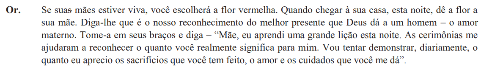
OR Queremos que cada um de vocês retire uma flor deste Altar. Se sua mãe já passou desta vida para a outra, vocês escolherá a flor branca e a guardará, sempre sagrada, em memória delas. Que possa a presença desta flor sempre despertar as delicadas lembranças dela e fortalecê-lo novamente em seus esforços para ser digno das esperanças e aspirações dela por você.
Trecho retirado da Cerimônia das Flores em homenagem ao Dia das Mães
![Trecho retirado da cerimonia em homenagem ao dia dos pais: Um filósofo certa vez disse que um filho é o meio mais certo de atingir-se a imortalidade. Também foi
dito que um pai quer deixar a melhor parte dele para o mundo seu filho. Poder tomar seu filho nas mãos quando for pequenino; passear com ele no inverno; mostrá-lo a glória de Deus, as maravilhas da natureza;
ouvir suas confissões quando for mais velho; guiá-lo pelo caminho que seguir; poder apontar com orgulho e dizer, Vê aquele Rapaz? Aquele é meu filho! Isso se passa na mente de todos - um clamor pela
imortalidade.](assets/fala-cerimonia-abraco.png)
OR Um filósofo certa vez disse que um filho é o meio mais certo de atingir-se a imortalidade. Também foi dito que um pai quer deixar a melhor parte dele para o mundo seu filho. Poder tomar seu filho nas mãos quando for pequenino; passear com ele no inverno; mostrá-lo a glória de Deus, as maravilhas da natureza; ouvir suas confissões quando for mais velho; guiá-lo pelo caminho que seguir; poder apontar com orgulho e dizer, Vê aquele Rapaz? Aquele é meu filho! Isso se passa na mente de todos - um clamor pela imortalidade.
Trecho retirado da Cerimônia do Abraço em homenagem ao Dia dos Pais
Criada por Frank Sherman Land no ano de 1919. Durante a infância de Frank, seus pais se divorciaram e ele passou a viver apenas com a mãe, a avó e as irmãs e sentia a falta de uma figura paterna. Desde muito novo se mostrava um rapaz exemplar com a comunicação e mantinha um clube religioso no porão de casa
Em seu vigésimo primeiro aniversário, foi convidado para ingressar na maçonaria, por meio de um convite de seu falecido avô.
Passando-se o tempo, Frank recebe uma ligação de um irmão maçom informando que um jovem havia perdido o seu pai na guerra e que o mesmo necessitava de uma figura de inspiração. Sabendo disso, Frank decide apadrinhar o jovem, levando-o de um lado para o outro. O jovem muito curioso, começou a se interessar pelos assuntos estudados por Frank, um deles sendo a A Ordem dos Pobres Cavaleiros de Cristo e do Templo de Salomão (Templários), que, então decidiu criar um clube para jovens junto do rapaz, que também chamou seus amigos para ouvir os ensinamentos de Frank.
Passando-se mais um tempo, durante o período da Segunda Guerra Mundial, muitos jovens Demolays lutaram na guerra, fazendo a ordem ter um grande desfalque de membros e quase fechar as portas. Porém, com muito esforço, os membros conseguiram reerguer a ordem por meio de Iniciações e trabalho árduo.
Como dito anteriormente, os jovens tiveram muito interesse nos assuntos estudados por Frank, sendo um deles a Ordem do Templo, e, ao conhecerem a história de martírio do Último Grão-Mestre da Ordem do Templo, Jacques DeMolay, se inspiraram pela determinação, coragem e companheirismo do mesmo ao resistir anos sob tortura do Rei da época, que tomado por ganância condenou Jacques e os Templários à fogueira, assim a história do guerreiro foi tomada como exemplo de companheirismo e fidelidade a seus ideias e companheiros, e também como um exemplo de luta contra a tirania e despotismo.
O nome “DeMolay” refere-se ao vilarejo que Jacques nasceu, Molay, no Reino de França em meados de 1243/1244 e 1249/1250. Sendo comum na época tomar o nome de seu vilarejo junto ao seu “De Molay”.
Amor à Família, aos pais, aos irmãos e amigos;
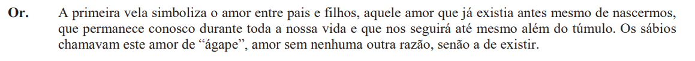OR A primeira vela simboliza o amor entre pais e filhos, aquele amor que já existia antes mesmo de nascermos, que permanece conosco durante toda a nossa vida e que nos seguirá até mesmo além do túmulo. Os sábios chamavam este amor de “ágape”, amor sem nenhuma outra razão, senão a de existir.
Trecho retirado da Cerimônia das Luzes
Respeito as diversas religiões existentes, mesmo diferindo da minha;
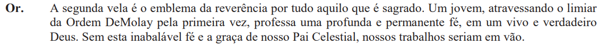OR A segunda vela é o emblema da reverência por tudo aquilo que é sagrado. Um jovem, atravessando o limiar da Ordem DeMolay pela primeira vez, professa uma profunda e permanente fé, em um vivo e verdadeiro Deus. Sem esta inabalável fé e a graça de nosso Pai Celestial, nossos trabalhos seriam em vão.
Trecho retirado da Cerimônia das Luzes
Cortesia para com os jovens, idosos, homens e mulheres, cortesia para com o próximo;
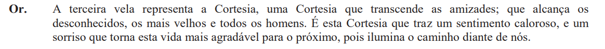OR A terceira vela representa a Cortesia, uma Cortesia que transcende as amizades; que alcança os desconhecidos, os mais velhos e todos os homens. É esta Cortesia que traz um sentimento caloroso, e um sorriso que torna esta vida mais agradável para o próximo, pois ilumina o caminho diante de nós.
Trecho retirado da Cerimônia das Luzes
Assim como Jacques DeMolay, que nunca entregou seus companheiros mesmo sob a pressão da Inquisição, juramos sermos irmãos a todo momento; "Um cavaleiro que serve o melhor ao seu irmão, serve melhor à si mesmo" - Lema dos cavaleiros da Távola Redonda;
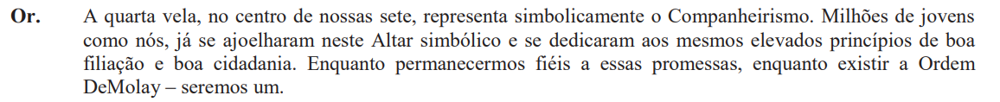OR A quarta vela, no centro de nossas sete, representa simbolicamente o Companheirismo. Milhões de jovens como nós, já se ajoelharam neste Altar simbólico e se dedicaram aos mesmos elevados princípios de boa filiação e boa cidadania. Enquanto permanecermos fiéis a essas promessas, enquanto existir a Ordem DeMolay - seremos um.
Trecho retirado da Cerimônia das Luzes
Fiel à nossos companheiros, nossos amigos, nossos relacionamentos; Digno de confiança alheia;
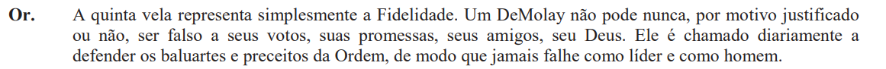OR A quinta vela representa simplesmente a Fidelidade. Um DeMolay não pode nunca, por motivo justificado ou não, ser falso a seus votos, suas promessas, seus amigos, seu Deus. Ele é chamado diariamente a defender os baluartes e preceitos da Ordem, de modo que jamais falhe como líder e como homem.
Trecho retirado da Cerimônia das Luzes
A pureza de ações, pensamentos e palavras; Uma mente sã em um corpo saudável é o melhor preparo para uma maioridade pura, da qual dependerá uma cidadania pura;
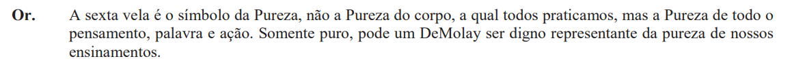OR A sexta vela é o símbolo da Pureza, não a Pureza do corpo, a qual todos praticamos, mas a Pureza de todo o pensamento, palavra e ação. Somente puro, pode um DeMolay ser digno representante da pureza de nossos ensinamentos.
Trecho retirado da Cerimônia das Luzes
Honrar o seu país, a sua bandeira, não como uma ideia política, mas ter orgulho de seu país; "É oportuno que esta bandeira seja entregue à guarda desses jovens rapazes que logo se tornarão cidadãos e que por sua honra deverão defender esta bandeira, ou nos campos de batalha ou na perpétua luta dos bons cidadãos contra o mal. Em todas as crises da história dessa nação nós convocamos nossos jovens e, graças a Deus, eles nunca deixaram de responder." - Cerimônia de Abertura dos Trabalhos Públicos
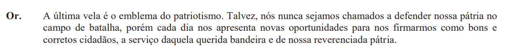OR A última vela é o emblema do patriotismo. Talvez, nós nunca sejamos chamados a defender nossa pátria no campo de batalha, porém cada dia nos apresenta novas oportunidades para nos firmarmos como bons e corretos cidadãos, a serviço daquela querida bandeira e de nossa reverenciada pátria.
Trecho retirado da Cerimônia das Luzes
Representada pela bandeira de nosso pais, como dito anteriormente, honraremos e defenderemos a nossa pátria independente da situação;
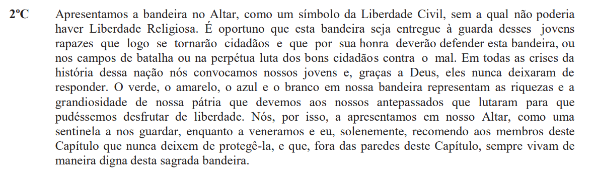2ºC Apresentamos a bandeira no Altar, como um símbolo da Liberdade Civil, sem a qual não poderia haver Liberdade Religiosa. É oportuno que esta bandeira seja entregue à guarda desses jovens rapazes que logo se tornarão cidadãos e que por sua honra deverão defender esta bandeira, ou nos campos de batalha ou na perpétua luta dos bons cidadãos contra o mal. Em todas as crises da história dessa nação nós convocamos nossos jovens e, graças a Deus, eles nunca deixaram de responder. O verde, o amarelo, o azul e o branco em nossa bandeira representam as riquezas e a grandiosidade de nossa pátria que devemos aos nossos antepassados que lutaram para que pudéssemos desfrutar de liberdade. Nós, por isso, a apresentamos em nosso Altar, como uma sentinela a nos guardar, enquanto a veneramos e eu, solenemente, recomendo aos membros deste Capítulo que nunca deixem de protegê-la, e que, fora das paredes deste Capítulo, sempre vivam de maneira digna desta sagrada bandeira.
Trecho retirado da Cerimônia de Abertura dos Trabalhos Públicos
Representada pelo o livro sagrado, não impomos um credo especifico em nossas cerimônias, colocamos uma bíblia apenas para representarmos a palavra de um Deus, caso haja garotos de outras religiões, eles podem levar os seus livros respetivos e colocar junto em nosso altar;
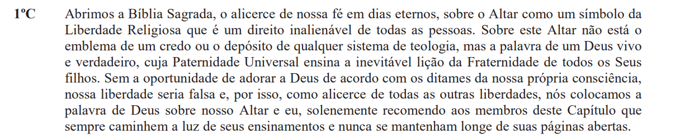1ºC Abrimos a Bíblia Sagrada, o alicerce de nossa fé em dias eternos, sobre o Altar como um símbolo da Liberdade Religiosa que é um direito inalienável de todas as pessoas. Sobre este Altar não está o emblema de um credo ou o depósito de qualquer sistema de teologia, mas a palavra de um Deus vivo e verdadeiro, cuja Paternidade Universal ensina a inevitável lição da Fraternidade de todos os Seus filhos. Sem a oportunidade de adorar a Deus de acordo com os ditames da nossa própria consciência, nossa liberdade seria falsa e, por isso, como alicerce de todas as outras liberdades, nós colocamos a palavra de Deus sobre nosso Altar e eu, solenemente recomendo aos membros deste Capítulo que sempre caminhem a luz de seus ensinamentos e nunca se mantenham longe de suas páginas abertas.
Trecho retirado da Cerimônia de Abertura dos Trabalhos Públicos
Representada pelos livros escolares no altar. Simboliza a defesa das escolas públicas, o berço da cidadania; Sempre estamos em prol de ajudar escolas necessitadas;
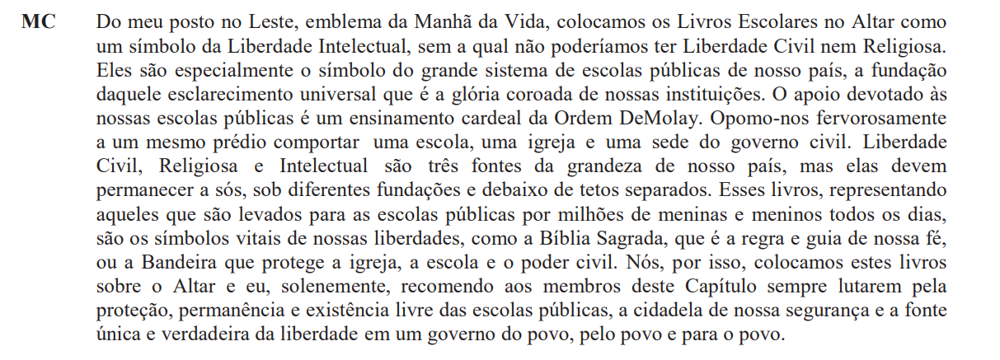MC Do meu posto no Leste, emblema da Manhã da Vida, colocamos os Livros Escolares no Altar como um símbolo da Liberdade Intelectual, sem a qual não poderíamos ter Liberdade Civil nem Religiosa. Eles são especialmente o símbolo do grande sistema de escolas públicas de nosso país, a fundação daquele esclarecimento universal que é a glória coroada de nossas instituições. O apoio devotado às nossas escolas públicas é um ensinamento cardeal da Ordem DeMolay. Opomo-nos fervorosamente a um mesmo prédio comportar uma escola, uma igreja e uma sede do governo civil. Liberdade Civil, Religiosa e Intelectual são três fontes da grandeza de nosso país, mas elas devem permanecer a sós, sob diferentes fundações e debaixo de tetos separados. Esses livros, representando aqueles que são levados para as escolas públicas por milhões de meninas e meninos todos os dias, são os símbolos vitais de nossas liberdades, como a Bíblia Sagrada, que é a regra e guia de nossa fé, ou a Bandeira que protege a igreja, a escola e o poder civil. Nós, por isso, colocamos estes livros sobre o Altar e eu, solenemente, recomendo aos membros deste Capítulo sempre lutarem pela proteção, permanência e existência livre das escolas públicas, a cidadela de nossa segurança e a fonte única e verdadeira da liberdade em um governo do povo, pelo povo e para o povo.
Trecho retirado da Cerimônia de Abertura dos Trabalhos Públicos